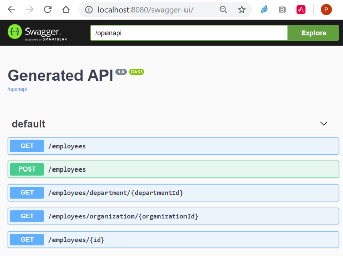
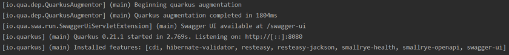
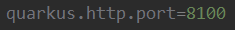
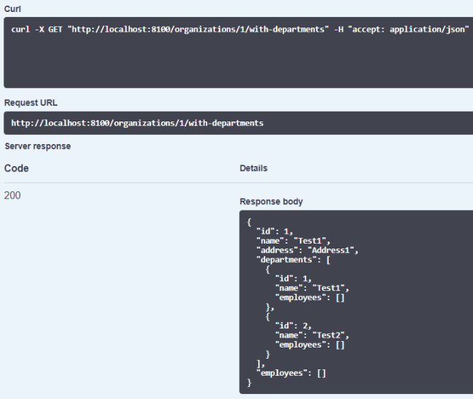
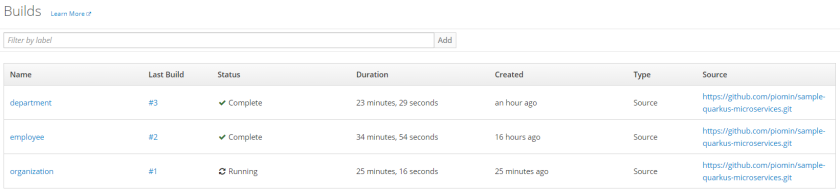
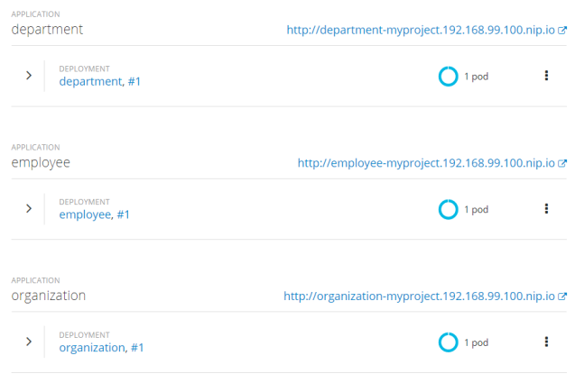
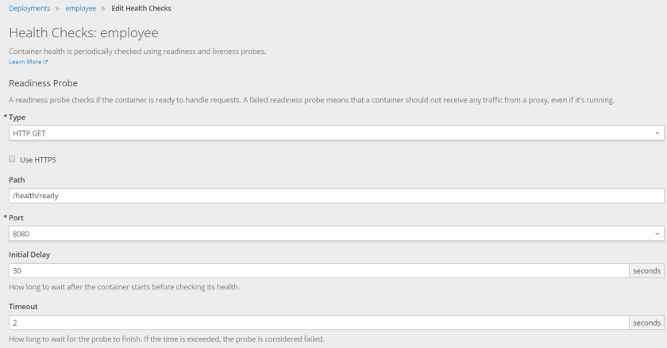

原文连接:https://www.cnblogs.com/liululee/p/11525469.html
在我的博客上，您有机会阅读了许多关于使用Spring Boot或Micronaut之类框架构建微服务的文章。这里将介绍另一个非常有趣的框架专门用于微服务体系结构，它越来越受到大家的关注– Quarkus。它是作为下一代Kubernetes/Openshift原生Java框架引入的。它构建在著名的Java标准之上，如CDI、JAX-RS和Eclipse MicroProfile，这些标准将它与Spring Boot区别开来。
其他一些可能说服您使用Quarkus的特性包括非常快的启动时间、为在容器中运行而优化的最小内存占用，以及较短的首次请求时间。此外，尽管它是一个相对较新的框架(当前版本是0.21)，但它有很多扩展，包括Hibernate、Kafka、RabbitMQ、Openapi和Vert.x等等。
在本文中，我将指导您使用Quarkus构建微服务，并在OpenShift(通过Minishift)上运行它们。我们将讨论以下主题:
- 构建基于rest的且包含输入校验的应用程序
- 微服务与RestClient之间的通信
- 开放健康检查(liveness, readiness)
- 开放OpenAPI /Swagger 文档
- 使用Quarkus Maven插件在本地机器上运行应用程序
- 使用JUnit和RestAssured进行测试
- 使用source-2镜像在Minishift上部署和运行Quarkus应用程序
1. 创建应用程序 - 依赖项
在创建新应用程序时，你可以执行一个Maven命令，该命令使用quarkus-maven-plugin。依赖项应该在参数-Dextensions中声明。
mvn io.quarkus:quarkus-maven-plugin:0.21.1:create \
-DprojectGroupId=pl.piomin.services \
-DprojectArtifactId=employee-service \
-DclassName="pl.piomin.services.employee.controller.EmployeeController" \
-Dpath="/employees" \
-Dextensions="resteasy-jackson, hibernate-validator"下面是我们pom.xml的结构:
<properties>
<quarkus.version>0.21.1</quarkus.version>
<project.build.sourceEncoding>UTF-8</project.build.sourceEncoding>
<maven.compiler.source>11</maven.compiler.source>
<maven.compiler.target>11</maven.compiler.target>
</properties>
<dependencyManagement>
<dependencies>
<dependency>
<groupId>io.quarkus</groupId>
<artifactId>quarkus-bom</artifactId>
<version>${quarkus.version}</version>
<type>pom</type>
<scope>import</scope>
</dependency>
</dependencies>
</dependencyManagement>
<build>
<plugins>
<plugin>
<groupId>io.quarkus</groupId>
<artifactId>quarkus-maven-plugin</artifactId>
<version>${quarkus.version}</version>
<executions>
<execution>
<goals>
<goal>build</goal>
</goals>
</execution>
</executions>
</plugin>
</plugins>
</build>对于使用输入验证构建简单的REST应用程序，我们不需要太多模块。您可能已经注意到，我只声明了两个扩展，这与下面pom.xml中的依赖项列表相同:
<dependency>
<groupId>io.quarkus</groupId>
<artifactId>quarkus-resteasy-jackson</artifactId>
</dependency>
<dependency>
<groupId>io.quarkus</groupId>
<artifactId>quarkus-hibernate-validator</artifactId>
</dependency>2. 创建应用程序 - 代码
对于Spring Boot或Micronaut用户来说，可能有点奇怪的是，没有使用静态代码main方法的主运行类。resource/controller类实际上就是主类。Quarkus的resource/controller类和方法应该使用javax.ws.rs库中的注解进行标记。
下面是employee-service的REST controller 的实现:
@Path("/employees")
@Produces(MediaType.APPLICATION_JSON)
public class EmployeeController {
private static final Logger LOGGER = LoggerFactory.getLogger(EmployeeController.class);
@Inject
EmployeeRepository repository;
@POST
public Employee add(@Valid Employee employee) {
LOGGER.info("Employee add: {}", employee);
return repository.add(employee);
}
@Path("/{id}")
@GET
public Employee findById(@PathParam("id") Long id) {
LOGGER.info("Employee find: id={}", id);
return repository.findById(id);
}
@GET
public Set<Employee> findAll() {
LOGGER.info("Employee find");
return repository.findAll();
}
@Path("/department/{departmentId}")
@GET
public Set<Employee> findByDepartment(@PathParam("departmentId") Long departmentId) {
LOGGER.info("Employee find: departmentId={}", departmentId);
return repository.findByDepartment(departmentId);
}
@Path("/organization/{organizationId}")
@GET
public Set<Employee> findByOrganization(@PathParam("organizationId") Long organizationId) {
LOGGER.info("Employee find: organizationId={}", organizationId);
return repository.findByOrganization(organizationId);
}
}我们使用CDI进行依赖注入，使用SLF4J进行日志记录。 Controller类使用内存存储库bean存储和检索数据。Repository bean使用CDI @ApplicationScoped注解，并注入controller:
@ApplicationScoped
public class EmployeeRepository {
private Set<Employee> employees = new HashSet<>();
public EmployeeRepository() {
add(new Employee(1L, 1L, "John Smith", 30, "Developer"));
add(new Employee(1L, 1L, "Paul Walker", 40, "Architect"));
}
public Employee add(Employee employee) {
employee.setId((long) (employees.size()+1));
employees.add(employee);
return employee;
}
public Employee findById(Long id) {
Optional<Employee> employee = employees.stream().filter(a -> a.getId().equals(id)).findFirst();
if (employee.isPresent())
return employee.get();
else
return null;
}
public Set<Employee> findAll() {
return employees;
}
public Set<Employee> findByDepartment(Long departmentId) {
return employees.stream().filter(a -> a.getDepartmentId().equals(departmentId)).collect(Collectors.toSet());
}
public Set<Employee> findByOrganization(Long organizationId) {
return employees.stream().filter(a -> a.getOrganizationId().equals(organizationId)).collect(Collectors.toSet());
}
}最后一个组件是带验证的实体类:
public class Employee {
private Long id;
@NotNull
private Long organizationId;
@NotNull
private Long departmentId;
@NotBlank
private String name;
@Min(1)
@Max(100)
private int age;
@NotBlank
private String position;
// ... GETTERS AND SETTERS
}3. 单元测试
对于大多数流行的Java框架，使用Quarkus进行单元测试非常简单。如果您正在测试基于REST的web应用程序，您应该在pom.xml中包含以下依赖项:
<dependency>
<groupId>io.quarkus</groupId>
<artifactId>quarkus-junit5</artifactId>
<scope>test</scope>
</dependency>
<dependency>
<groupId>io.rest-assured</groupId>
<artifactId>rest-assured</artifactId>
<scope>test</scope>
</dependency>让我们分析一下来自organization-service(我们的另一个微服务，以及employee-service和department-service)的测试类。测试类应该用@QuarkusTest注释。我们可以通过@Inject注解注入其他bean。其余部分是典型的JUnit和RestAssured—我们正在测试controller公开的API方法。因为我们使用内存存储库，所以除了服务间通信之外，我们不需要模拟任何东西(我们将在本文后面讨论)。对于GET、POST方法，我们有一些积极的场景，还有一个不通过输入验证的消极场景(testInvalidAdd)。
@QuarkusTest
public class OrganizationControllerTests {
@Inject
OrganizationRepository repository;
@Test
public void testFindAll() {
given().when().get("/organizations").then().statusCode(200).body(notNullValue());
}
@Test
public void testFindById() {
Organization organization = new Organization("Test3", "Address3");
organization = repository.add(organization);
given().when().get("/organizations/{id}", organization.getId()).then().statusCode(200)
.body("id", equalTo(organization.getId().intValue()))
.body("name", equalTo(organization.getName()));
}
@Test
public void testFindByIdWithDepartments() {
given().when().get("/organizations/{id}/with-departments", 1L).then().statusCode(200)
.body(notNullValue())
.body("departments.size()", is(1));
}
@Test
public void testAdd() {
Organization organization = new Organization("Test5", "Address5");
given().contentType("application/json").body(organization)
.when().post("/organizations").then().statusCode(200)
.body("id", notNullValue())
.body("name", equalTo(organization.getName()));
}
@Test
public void testInvalidAdd() {
Organization organization = new Organization();
given().contentType("application/json").body(organization).when().post("/organizations").then().statusCode(400);
}
}4. 服务间通信
由于Quarkus的目标是在Kubernetes上运行，因此它不提供任何对第三方服务发现(例如通过Consul 或Netflix Eureka)和与此发现集成的HTTP客户机的内置支持。然而，Quarkus为REST通信提供了专用的客户端支持。要使用它，我们首先需要包括以下依赖性:
<dependency>
<groupId>io.quarkus</groupId>
<artifactId>quarkus-rest-client</artifactId>
</dependency>Quarkus基于MicroProfile REST客户机提供声明性REST客户机。您需要创建一个带有所需方法的接口，并使用@RegisterRestClient对其进行注解。其他注解与服务器端非常相似。因为您使用@RegisterRestClient来标记Quarkus，所以应该知道这个接口作为REST客户机可用于CDI注入。
@Path("/departments")
@RegisterRestClient
public interface DepartmentClient {
@GET
@Path("/organization/{organizationId}")
@Produces(MediaType.APPLICATION_JSON)
List<Department> findByOrganization(@PathParam("organizationId") Long organizationId);
@GET
@Path("/organization/{organizationId}/with-employees")
@Produces(MediaType.APPLICATION_JSON)
List<Department> findByOrganizationWithEmployees(@PathParam("organizationId") Long organizationId);
}现在，让我们看一下organization-service内的controller类。与@Inject一起，我们需要使用@RestClient注解来正确地注入REST客户机bean。之后，您可以使用接口方法来调用其他公开的服务
@Path("/organizations")
@Produces(MediaType.APPLICATION_JSON)
public class OrganizationController {
private static final Logger LOGGER = LoggerFactory.getLogger(OrganizationController.class);
@Inject
OrganizationRepository repository;
@Inject
@RestClient
DepartmentClient departmentClient;
@Inject
@RestClient
EmployeeClient employeeClient;
// ... OTHER FIND METHODS
@Path("/{id}/with-departments")
@GET
public Organization findByIdWithDepartments(@PathParam("id") Long id) {
LOGGER.info("Organization find: id={}", id);
Organization organization = repository.findById(id);
organization.setDepartments(departmentClient.findByOrganization(organization.getId()));
return organization;
}
@Path("/{id}/with-departments-and-employees")
@GET
public Organization findByIdWithDepartmentsAndEmployees(@PathParam("id") Long id) {
LOGGER.info("Organization find: id={}", id);
Organization organization = repository.findById(id);
organization.setDepartments(departmentClient.findByOrganizationWithEmployees(organization.getId()));
return organization;
}
@Path("/{id}/with-employees")
@GET
public Organization findByIdWithEmployees(@PathParam("id") Long id) {
LOGGER.info("Organization find: id={}", id);
Organization organization = repository.findById(id);
organization.setEmployees(employeeClient.findByOrganization(organization.getId()));
return organization;
}
}通信中缺少的最后一个东西是目标服务的地址。我们可以使用@RegisterRestClient注解的字段baseUri 来提供它们。然而，更好的解决方案似乎是将它们放在application.properties中。属性名需要包含客户端接口的完全限定名和后缀mp-rest/url。
pl.piomin.services.organization.client.DepartmentClient/mp-rest/url=http://localhost:8090
pl.piomin.services.organization.client.EmployeeClient/mp-rest/url=http://localhost:8080在前一节中，我已经提到了单元测试和服务间通信。要测试与其他应用程序通信的API方法，我们需要模拟REST客户机。下面是为模拟示例创建了DepartmentClient。它应该只在测试期间可见，所以我们必须将它放在src/test/java中。如果我们用@Mock 和@RestClient注释它，那么默认情况下将自动使用这个bean，而不是在src/main/java中定义的声明性REST客户机。
@Mock
@ApplicationScoped
@RestClient
public class MockDepartmentClient implements DepartmentClient {
@Override
public List<Department> findByOrganization(Long organizationId) {
return Collections.singletonList(new Department("Test1"));
}
@Override
public List<Department> findByOrganizationWithEmployees(Long organizationId) {
return null;
}
}5. 监测和记录
我们可以轻松地使用Quarkus公开健康检查或API文档。API文档是使用OpenAPI/Swagger构建的。Quarkus利用了 SmallRye项目中可用的库。我们应该在pom.xml中包含以下依赖项:
<dependency>
<groupId>io.quarkus</groupId>
<artifactId>quarkus-smallrye-openapi</artifactId>
</dependency>
<dependency>
<groupId>io.quarkus</groupId>
<artifactId>quarkus-smallrye-health</artifactId>
</dependency>我们可以定义两种类型的健康检查:readiness 和liveness。有/health/ready 和/health/live上下文路径。要将它们公开到应用程序之外，我们需要定义一个实现MicroProfile HealthCheck 接口的bean。Readiness 端应该用@Readiness标注，而liveness 端应该用@Liveness标注。
@ApplicationScoped
@Readiness
public class ReadinessHealthcheck implements HealthCheck {
@Override
public HealthCheckResponse call() {
return HealthCheckResponse.named("Employee Health Check").up().build();
}
}为了启用Swagger文档，我们只需要添加一个依赖项即可。Quarkus还为Swagger提供了内置UI。默认情况下，它是在开发模式下启用的，所以如果您愿意在生产环境中使用它，您应该添加quarkus.swagger-ui.always-include=true到您的application.properties文件。现在，如果通过执行Maven命令mvn compile quarkus:dev在本地以开发模式运行应用程序employee-service，您可以在URLhttp://localhost:8080/swagger-ui下查看可用的API规范。

这是我从应用程序启动时的日志。它打印监听端口和加载的扩展列表。

6. 在本地机器上运行微服务
因为我们希望在同一台机器上运行多个应用程序，所以需要覆盖它们的默认HTTP监听端口。虽然employee-service仍然在默认的8080 端口上运行，但是其他微服务使用不同的端口，如下所示。
department-service:
organization-service:

让我们测试一下Swagger UI中的服务间通信。我调用了GET /organizations/{id}/with-departments，它调用由department-service公开的端点GET GET /departments/organization/{organizationId}。结果如下图所示。

7. 在OpenShift上运行微服务
我们已经完成了示例微服务体系结构的实现，并在本地机器上运行它们。现在，我们可以进行最后一步，并尝试在 Minishift上部署这些应用程序。在OpenShift上部署Quarkus应用程序时，我们有一些不同的方法。今天，我将向您展示如何利用S2I为此构建的机制。
我们将使用Quarkus GraalVM Native S2I Builder。可以在 quai.io的 quarkus/ubi-quarkus-native-s2i找到。当然，在部署应用程序之前，我们需要先启动Minishift。根据Quarkus的文档，基于GraalVM的本机构建占用了大量内存和CPU，所以我决定为Minishift设置6GB和4个内核。
$ minishift start --vm-driver=virtualbox --memor此外，我们还需要稍微修改一下应用程序的源代码。您可能还记得，我们使用JDK 11在本地运行它们。Quarkus S2I builder只支持JDK 8，所以我们需要在pom.xml中更改它。我们还需要包括一个声明的本机配置文件如下:
<properties>
<quarkus.version>0.21.1</quarkus.version>
<project.build.sourceEncoding>UTF-8</project.build.sourceEncoding>
<maven.compiler.source>1.8</maven.compiler.source>
<maven.compiler.target>1.8</maven.compiler.target>
</properties>
...
<profiles>
<profile>
<id>native</id>
<activation>
<property>
<name>native</name>
</property>
</activation>
<build>
<plugins>
<plugin>
<groupId>io.quarkus</groupId>
<artifactId>quarkus-maven-plugin</artifactId>
<version>${quarkus.version}</version>
<executions>
<execution>
<goals>
<goal>native-image</goal>
</goals>
<configuration>
<enableHttpUrlHandler>true</enableHttpUrlHandler>
</configuration>
</execution>
</executions>
</plugin>
<plugin>
<artifactId>maven-failsafe-plugin</artifactId>
<version>2.22.1</version>
<executions>
<execution>
<goals>
<goal>integration-test</goal>
<goal>verify</goal>
</goals>
<configuration>
<systemProperties>
<native.image.path>${project.build.directory}/${project.build.finalName}-runner</native.image.path>
</systemProperties>
</configuration>
</execution>
</executions>
</plugin>
</plugins>
</build>
</profile>
</profiles>另外在application.properties文件需要修改两处。我们不需要覆盖端口号，因为 Minishift动态地为每个pod分配虚拟IP。服务间的通信是通过OpenShift发现实现的，所以我们只需要设置服务的名称而不是localhost。
quarkus.swagger-ui.always-include=true
pl.piomin.services.organization.client.DepartmentClient/mp-rest/url=http://department:8080
pl.piomin.services.organization.client.EmployeeClient/mp-rest/url=http://employee:8080最后，我们可以将我们的应用程序部署到Minishift上。为此，你应使用oc客户端执行以下命令:
$ oc new-app quay.io/quarkus/ubi-quarkus-native-s2i:19.1.1~https://github.com/piomin/sample-quarkus-microservices.git#openshift --context-dir=employee --name=employee
$ oc new-app quay.io/quarkus/ubi-quarkus-native-s2i:19.1.1~https://github.com/piomin/sample-quarkus-microservices.git#openshift --context-dir=department --name=department
$ oc new-app quay.io/quarkus/ubi-quarkus-native-s2i:19.1.1~https://github.com/piomin/sample-quarkus-microservices.git#openshift --context-dir=organization --name=organization正如您所看到的，可以在我的GitHub帐户上找到找到程序源代码，地址是https://github.com/piomin/sample-quarkus-microservices.git。在Minishift 上运行的版本已经在分支openshift中共享。在本地机器上运行的版本在主分支上可用。因为所有的应用程序都存储在一个库中，所以我们需要为每个部署定义一个参数context-dir 。
我很失望。虽然为minishift 设置更多的内存和CPU花费了我很长的时间——大约25分钟。

然而，经过长时间的等待，我的所有应用程序终于都部署好了。

我通过执行下面可见的命令将它们公开在Minishift 外。可以使用DNS http://${APP_NAME}-myproject.192.168.99.100.nip.io下的OpenShift路由测试它们。
$ oc expose svc employee
$ oc expose svc department
$ oc expose svc organization此外，您还可以在OpenShift上启用readiness 和liveness 健康检查，因为它们在默认情况下是禁用的。

9月福利，关注公众号
后台回复：004，领取8月翻译集锦!
往期福利回复：001，002, 003即可领取！